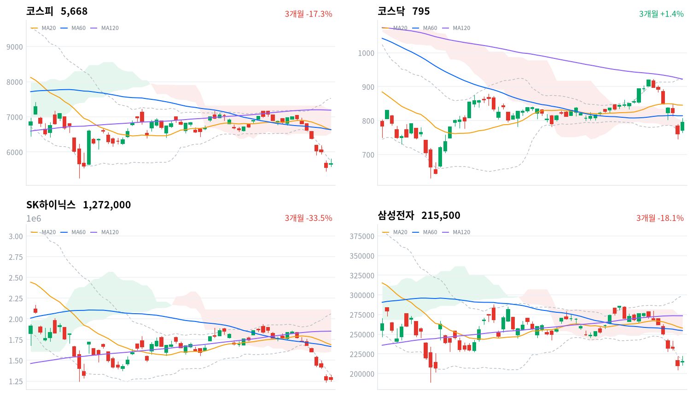

코스피는 서킷브레이커가 걸린 전날 급락 뒤 7거래일 만에 올랐고, 외국인은 코스피를 순매수로 돌아섰다(당일 잠정). 그러나 오후 들어 5,800선까지 올랐던 지수는 마감까지 상승분의 절반 넘게 반납했다.
우리는 이 반등을 매도 소진의 시작보다 하루짜리 과매도 반발에 가깝다고 본다. 10월 19일 신용융자 관리 시행부터 21일까지 세 세션의 외국인 수급과 코스피 종가가 이 판단을 가른다.
코스피는 2.05% 오른 5,668로 마감해 7거래일 연속 하락을 멈췄다. 전날에는 미국 9월 소비자물가가 예상을 웃돌았다는 소식과 뉴욕 AI·반도체 급락이 겹쳐 7.57% 내렸고, 두 시장에 서킷브레이커가 걸렸다. 오늘은 외국인이 코스피를 3,637억원 순매수했고(전일 3조7,637억원 순매도, 당일 잠정) 코스닥은 4.46% 올랐다. 다만 오후 들어 5,800선까지 오른 지수는 마감까지 고점(5,810)에서 140포인트 넘게 밀렸다. 반도체 대장주 SK하이닉스는 0.79% 오르는 데 그쳤다.
주식은 2% 넘게 되돌렸지만 채권시장은 위험이 줄었다고 값을 매기지 않았다. 회사채 AA- 3년물과 국고채 3년물의 금리차는 68.7bp로 하루 새 0.5bp 좁혀지는 데 그쳤고, 최근 2년(532거래일) 가운데 이보다 넓었던 날이 44일뿐이다. 보도는 외국인 귀환과 역대 최저 수준의 밸류에이션을 반등 근거로 묶는다. 우리가 다르게 보는 곳은 그 근거가 아직 하루치라는 점이다. 하루 순매수와 아시아 대비 초과 상승(1.44%포인트)만으로는 전날 서킷브레이커 낙폭의 기계적 되돌림과 구분되지 않는다.
이번 반등은 매도 소진의 시작보다 하루짜리 과매도 반발에 가깝다고 판단한다. 외국인 순매수는 직전 두 세션 순매도(1조1,614억원, 3조7,637억원)에 비해 작다. 전날 1조7,176억원을 사들인 기관은 오늘 6,815억원을 팔아 반등을 매도 기회로 썼다. 직전 미국 세션에서 마이크론이 1.87% 올랐는데 SK하이닉스는 그만큼도 오르지 못해, 메모리 대형주의 매도 압력은 남아 있다. 외국인이 10월 15일 순매도 뒤 순매수로 돌아섰고 원/달러가 장중 15원 넘게 내려 환율 부담도 줄었으니 매도 소진이 시작됐을 수도 있으나, 오후 반락과 메모리 대장주의 약세가 그 설명과 맞지 않아 반발 쪽으로 본다. 두 설명은 10월 19일부터 21일까지 세 세션의 외국인 코스피 순매수 합계와 10월 21일 코스피 종가에서 갈린다.
오늘 등락에는 큰 무게를 두지 않는다. 지수는 전날 낙폭의 3분의 1도 되찾지 못했고, 한국 마감 뒤 열린 미국 10월 16일 세션에서 마이크론이 5.63% 내려 다음 세션도 메모리 약세 위에서 시작한다. 새로 제안할 상품은 없다. 해외주식 펀드가 보는 반도체 업종에서는 한국 메모리의 상대 약세가 이어져, 미국 반도체 업종에 대한 판단을 바꿀 근거가 생기지 않았다. 지수 상품의 손바뀜은 양방향으로 컸다. KODEX 200(3.06조원)과 KODEX 레버리지(1.97조원) 못지않게 KODEX 인버스(1.26조원)와 KODEX 200선물인버스2X(1.22조원)도 많이 거래됐다. 기다리는 것은 10월 19일 종합금융투자사 10곳의 신용융자 관리 시행 첫 세션, 10월 19일부터 21일까지 외국인 코스피 수급, 그리고 10월 22일 금융통화위원회다.
코스피가 볼린저 밴드 하단인 5,737 위로 마감하면 하루짜리 반발 해석을 철회한다. 오늘 종가는 이 선 아래였고, 장중에는 그 위로 70포인트 넘게 올라갔다가 밀려 내려왔다. 미국 반도체 급락과 신용융자 관리 시행을 받아내고도 지수가 밴드 안으로 돌아온다면, 그것은 기계적 되돌림이 아니라 매도가 실제로 잦아든 신호로 본다.
10월 14일 판단은 무효화됐다. 코스피 종가가 반증선 5,911 아래에서 끝나, 조건이 깨져 무효화된 판단을 철회한다. 그날 우리는 외국인 순매도가 전일의 4분의 1로 줄어든 것을 메모리 대형주 수급 해소의 시작으로 읽었다. 잘못 본 것은 미국 물가와 AI 투자 수익성이라는 바깥 충격이 아직 남아 있었다는 점이다. 10월 15일 그 충격이 한꺼번에 들어오자 외국인 매도는 다시 커졌고, SK하이닉스는 마이크론보다 훨씬 더 내렸다. 기다린 조건 가운데 외국인 순매도 1조원 미만 세션은 오늘 순매수로 처음 채워졌지만, SK하이닉스 대 마이크론 흐름은 반대로 갔다. 10월 22일 금융통화위원회와 SK하이닉스 3분기 실적은 아직 오지 않았다.
출처: 강원도민일보, 파이낸셜뉴스, 한국경제
직전 미국 10월 15일 세션은 반등했다. S&P500은 0.33%, 나스닥은 0.08%, 다우는 1.08% 올랐고, 마이크론도 1.87% 올랐다. 오늘 아시아는 모두 올랐지만 폭은 작았다. 닛케이가 1.39% 오르고 항셍(+0.52%)·대만가권(+0.30%)·상해종합(+0.24%)이 뒤를 이어 네 지수 평균은 0.61% 올랐다. 코스피는 이보다 1.44%포인트 더 올라, 전날 낙폭이 컸던 만큼 되돌림도 컸다.
코스피는 전일 종가(5,554)보다 1.80% 높은 5,654에서 출발했다. 밤사이 미국 지수가 오르고 마이크론이 반등한 것이 시가를 끌어올렸다. 한국 정규장 동안 미국 선물은 S&P 선물 +0.18%, 나스닥 선물 +0.53%로 완만하게 올라, 오후 반락은 바깥 가격이 이끈 움직임이 아니다.
코스피는 하루 범위(5,590~5,810)의 아래쪽 3분의 1 남짓에서 끝났다. 코스닥은 794.78로 범위의 위쪽 3분의 1 안에서 마감해 끝까지 더 잘 버텼다. 원/달러는 한국장 시간대 오전 고점 1,348원에서 15원 넘게 밀려 1,332원에서 마지막으로 관측됐다.
이날 지수는 전날 급락의 되돌림이 이끌었고, 반도체부터 헬스케어·방산까지 업종 대부분이 함께 올랐다. 과매도 구간의 저가 매수와 전날 뉴욕 반등이 배경으로 꼽혔다는 보도가 나왔다. 외국인이 장 초반 팔다가 오후에 매수로 돌아섰다는 보도도 있다. 막판 반락을 직접 설명하는 뉴스는 찾지 못했고, 시간외 거래와 투자자별 장중 흐름은 자료가 없어 마감 직전 매도 주체는 가리지 못한다.
출처: 한국경제, 파이낸셜뉴스, 뉴데일리
코스피는 7거래일 연속 하락을 멈췄지만, 전날 7.57% 급락 뒤라 종가는 아직 볼린저 밴드 하단(5,737) 아래에 있다. 코스닥은 4.46% 오른 794.78로 코스피의 두 배 넘게 올랐다.
| 지수 | 종가 | 등락률 | 시가 | 고가 | 저가 | 전일 종가 |
|---|---|---|---|---|---|---|
| 코스피 | 5,668.05 | +2.05% | 5,653.99 | 5,809.94 | 5,590.33 | 5,554.22 |
| 코스닥 | 794.78 | +4.46% | 772.17 | 807.54 | 764.97 | 760.82 |
장중 경로에서 볼 것은 막판 반락이다. 코스피는 오전에 5,700선을 넘었고, 14시에는 5,800선까지 올라 볼린저 밴드 하단을 장중 되찾았다. 그러나 마지막 한 시간 반 사이 130포인트 넘게 밀려 다시 그 선 아래에서 끝났다. 코스닥은 같은 시간대 805선에서 795선으로 덜 밀렸다.

코스피·코스닥·SK하이닉스·삼성전자 3개월 일봉에 이동평균(20·60·120)·볼린저밴드·일목균형표 구름대를 겹쳐 그렸다. 상승 캔들은 녹색, 하락 캔들은 적색이다.
코스피는 세 이동평균과 일목 구름 아래, 볼린저 밴드 하단 바로 밑에서 마감해 역배열이 이어졌다. 밴드 하단(5,737)을 되찾아도 종가 10% 안에는 다음 계산된 저항이 없고, 20일 저점(5,451)을 내주면 60일 저점(5,263)이 다음 지지선이다.
코스닥은 세 이동평균 아래지만 일목 구름 안에서 마감해 추세의 자리가 코스피보다 높다. 구름 상단(801)을 넘으면 60일선(814)이 다음 저항이고, 구름 하단(786)을 내주면 볼린저 밴드 하단(770)이 다음 지지선이다.
SK하이닉스는 세 이동평균과 일목 구름 아래, 볼린저 밴드 하단 밖에서 마감했다. 밴드 하단(132만원)을 되찾으면 밴드 안으로 돌아오고, 20일 저점이자 60일 저점(124만원)을 내주면 종가 10% 안에는 계산된 지지선이 없다.
삼성전자는 세 이동평균과 일목 구름 아래, 볼린저 밴드 하단 바로 밑에서 마감했다. 밴드 하단(21만7천원)을 되찾아도 종가 10% 안에는 다음 계산된 저항이 없고, 20일 저점(20만5천원)을 내주면 종가 10% 안에는 계산된 지지선이 없다.
위 레벨은 이동평균·볼린저밴드·일목균형표와 스윙 고저를 기계적으로 계산한 값이며 투자 권유가 아니다.
| 주체 | 순매수(억원) |
|---|---|
| 개인 | -5,126 |
| 외국인 | +3,637 |
| 기관 | -6,815 |
| 주체 | 순매수(억원) |
|---|---|
| 개인 | -908 |
| 외국인 | -945 |
| 기관 | +1,689 |
외국인이 돌아왔지만 코스피에서는 판 쪽이 더 많았다. 외국인은 3,637억원을 순매수해(당일 잠정) 표에 있는 10월 1일 이후 처음 순매수로 돌아섰다. 기관은 6,815억원(전일 1조7,176억원 순매수), 개인은 5,126억원(전일 1조3,967억원 순매수)을 순매도했다. 전날 외국인 매도를 받아 낸 기관과 개인이 반등에서 물량을 내놓은 날이다.
외국인이 삼성전자를 사고 SK하이닉스를 팔았다는 보도가 나왔다. 종목별 외국인 수급은 자료가 없어 확인하지 못하지만, 삼성전자가 SK하이닉스보다 크게 오른 등락 차이와 방향이 겹친다.
코스닥에서는 외국인이 945억원을 순매도하고(전일 2,228억원 순매수) 기관이 1,689억원을 순매수했다(전일 1,614억원 순매도). 개인은 908억원을 팔았다(전일 748억원 순매도). 코스닥 상승은 코스피와 달리 기관 매수와 함께 나왔다.
장중 누적 수급과 프로그램 매매는 받을 수 있는 자료가 없어 싣지 않는다.
출처: 자본시장뉴스
| 순위 | 종목/ETF | 구분 | 거래대금 | 비고 |
|---|---|---|---|---|
| 1 | SK하이닉스 | 개별주 | 5.77조원 | - |
| 2 | 삼성전자 | 개별주 | 3.96조원 | - |
| 3 | 반도체 테마 ETF | 테마·롱 | 2.45조원 | 28종 합산 |
| 4 | 삼성전기 | 개별주 | 0.85조원 | - |
| 5 | KODEX CD금리액티브(합성) | 단기금리·현금성 | 0.84조원 | - |
| 6 | 삼성전자우 | 개별주 | 0.73조원 | - |
| 7 | 2차전지 테마 ETF | 테마·롱 | 0.45조원 | 14종 합산 |
| 8 | TIGER CD1년금리액티브(합성) | 단기금리·현금성 | 0.44조원 | - |
| 9 | SK스퀘어 | 개별주 | 0.42조원 | - |
| 10 | 삼성SDI | 개별주 | 0.28조원 | - |
단위 백만원 원본을 조 단위로 환산했다. 같은 기초자산 ETF는 방향별로, 같은 테마 섹터 ETF는 테마별로 묶고 지수·해외 ETF는 제외했다.
반등일에도 손바뀜은 메모리에 몰렸다. SK하이닉스(5.77조원)·삼성전자(3.96조원)·반도체 테마 ETF 28종 합산(2.45조원)이 1~3위였다. 거래대금이 가장 컸던 SK하이닉스가 메모리 대형주 가운데 가장 덜 올랐다. 2차전지 테마 ETF 14종 합산(0.45조원)과 삼성SDI(0.28조원)는 상위에 남았지만, 대표 ETF 기준 섹터 가운데 2차전지만 이날 내렸다. 단기금리를 따르는 CD금리 상품 두 종도 상위 열 줄에 들었다.
반등은 일부 종목이 아니라 업종 전반에 넓게 퍼졌다. 반도체와반도체장비는 2.47% 올랐고 173종목 가운데 160종목이 함께 올라 폭넓은 상승이었다. 가장 크게 오른 건강관리기술(모든 종목 상승)·생물공학(59종목 중 51종목)·우주항공과국방(35종목 중 33종목)도 오른 종목 비율이 높았다. 반면 컴퓨터와주변기기(+7.92%)는 21종목 가운데 13종목만 올라 일부 종목이 끌어올린 상승이었다.
대표 ETF 기준 섹터 막대에서 하루 수익률은 헬스케어(+6.34%)가 가장 높았고 2차전지(-0.71%)만 내렸다. 한 주 수익률로는 반도체(-20.50%)가 여전히 가장 약해, 오늘 반등은 그 낙폭의 일부만 되돌렸다.
반도체는 함께 올랐지만 메모리 대장주는 뒤처졌다(삼성전자 +2.62%, 삼성전자우 +5.09%, SK하이닉스 +0.79%, 한미반도체 +9.26%). 미국 반도체의 낙폭 축소와 최근 급락 뒤 저가 매수가 배경으로 꼽혔다는 보도가 나왔다. 한미반도체는 확인된 재료 없음.
대한항공은 두 자릿수로 내렸다(대한항공 -10.53%). 당일 공시로 확인된 원인은 없다. 영업이익이 인건비 증가로 증권사 추정치를 밑돌았다는 분석이 나왔다는 보도가 있지만, 실적 발표 시점이 확인되지 않아 급락의 원인으로 잇지는 않는다.
2차전지는 반등장에서 소외됐다(삼성SDI -1.85%, 엘앤에프 -10.51%). 엘앤에프는 해명 공시를 냈지만 급락과의 관계는 드러나지 않았고, 두 종목 모두 확인된 재료 없음.
전력기기주가 크게 올랐다(효성중공업 +5.77%, HD현대일렉트릭 +5.95%). 확인된 재료 없음.
방산주도 크게 올랐다(한화에어로스페이스 +7.77%, 한화시스템 +5.19%). 확인된 재료 없음.
이 밖에 셀트리온(+6.53%)·삼성물산(+7.1%)·현대차(+5.58%)가 크게 올랐고, LS에코에너지(-6.33%)와 S-Oil(-3.58%)은 내렸다.
출처: 뉴스핌, 재경일보, 남도일보, 톱스타뉴스
국고채 금리는 소폭 내렸지만 신용 금리차는 여전히 넓다. 국고채 3년물은 1.3bp 내린 3.854%, 10년물은 1.1bp 내린 4.182%였다. 회사채 AA- 3년물은 1.8bp 내린 4.541%로 국고채보다 조금 더 내렸지만, 금리차는 68.7bp로 0.5bp 좁혀지는 데 그쳤다. 10년물과 3년물의 기울기는 32.8bp로 0.2bp 가팔라졌을 뿐 2년 범위의 한가운데쯤이다.
| 지표 | 금리 | 전일比(bp) | 기준일 |
|---|---|---|---|
| 국고채 3년 | 3.854% | -1.3 | 2026-10-16 |
| 국고채 10년 | 4.182% | -1.1 | 2026-10-16 |
| CD 91일 | 3.250% | 0.0 | 2026-10-16 |
| 회사채 AA- 3년 | 4.541% | -1.8 | 2026-10-16 |
| 한국은행 기준금리 | 3.000% | 0.0 | 2026-09 |
한국은행 경제통계시스템(ECOS) 기준. 기준금리는 2026년 9월 기준 값이다.
한국 금리는 미국 장기금리 급락을 거의 따라가지 않았다. 미국 10월 15일 세션에 미국 10년물 금리가 12.7bp 내린 5.061%였다는 보도가 나왔는데, 오늘 국고채 10년물 하락은 그 10분의 1 수준이었다. CD 91일은 3.25%로 변하지 않았고 기준금리는 9월 기준 3.00%다. 국고채 3년물은 기준금리보다 85.4bp 위에 있는데, 정책 경로와 기간프리미엄이 섞인 이 차이는 최근 2년(532거래일) 가운데 넓은 쪽 22% 안이다. 원화는 외국인 순매수 전환과 같은 날 강해졌다.
출처: 뉴스1
| 미국 참조 지수 | 구분 | 관측 | 등락률 | 업종 내 상승 비율 | 기준일 |
|---|---|---|---|---|---|
| 반도체·AI 하드웨어 | 업종 | 반도체와반도체장비 | +2.47% | 92% | 10/16 |
| 반도체·AI 하드웨어 | 종목 | SK하이닉스 | +0.79% | – | 10/16 |
| 반도체·AI 하드웨어 | 종목 | 삼성전자 | +2.62% | – | 10/16 |
| 반도체·AI 하드웨어 | 지수 | 대만가권 | +0.30% | – | 10/16 |
| 전력망 | 업종 | 전기장비 | +3.71% | 86% | 10/16 |
| 전력망 | 종목 | HD현대일렉트릭 | +5.95% | – | 10/16 |
| 전력망 | 종목 | LS ELECTRIC | +1.86% | – | 10/16 |
| 전력망 | 종목 | 효성중공업 | +5.77% | – | 10/16 |
| 방산 | 업종 | 우주항공과국방 | +7.13% | 94% | 10/16 |
| 방산 | 종목 | 한화에어로스페이스 | +7.77% | – | 10/16 |
| 산업재 | 업종 | 기계 | +2.37% | 88% | 10/16 |
| 산업재 | 종목 | HD현대중공업 | -0.28% | – | 10/16 |
| 산업재 | 종목 | 한화오션 | +4.17% | – | 10/16 |
| 산업재 | 종목 | 삼성중공업 | +1.27% | – | 10/16 |
| 금속·광업 | 업종 | 철강 | +2.07% | 78% | 10/16 |
| 금속·광업 | 업종 | 비철금속 | +1.86% | 85% | 10/16 |
| 금속·광업 | 종목 | POSCO홀딩스 | +1.54% | – | 10/16 |
| 금융 | 업종 | 은행 | +1.06% | 91% | 10/16 |
| 금융 | 업종 | 증권 | +2.71% | 95% | 10/16 |
| 금융 | 종목 | KB금융 | +2.11% | – | 10/16 |
| 금융 | 종목 | 신한지주 | -0.85% | – | 10/16 |
| 소프트웨어 | 업종 | 소프트웨어 | +2.42% | 78% | 10/16 |
| 소프트웨어 | 업종 | IT서비스 | +3.78% | 75% | 10/16 |
| 소프트웨어 | 종목 | NAVER | +3.69% | – | 10/16 |
| 소프트웨어 | 종목 | 카카오 | +2.74% | – | 10/16 |
| 에너지 | 종목 | S-Oil | -3.58% | – | 10/16 |
| 에너지 | 종목 | SK이노베이션 | -1.94% | – | 10/16 |
| 일본 | 지수 | 닛케이 | +1.39% | – | 10/16 |
| 중국 | 지수 | 항셍 | +0.52% | – | 10/16 |
| 중국 | 지수 | 상해종합 | +0.24% | – | 10/16 |
원화 강세는 해외주식 펀드가 들고 있는 달러 자산의 원화 환산 가치를 낮추고, 새로 달러를 사는 비용은 줄이는 쪽으로 움직였다. 한국장 시간대 원/달러는 10:30 고점 1,348원에서 밀려 15:30에 1,332원에서 마지막으로 관측됐는데, 서울 외환시장 공식 종가가 아닌 장중 관측값이다. 대기 자금의 참고 금리는 거의 그대로다. CD 91일은 3.25%로 변화가 없었고, 국고채 3년물은 1.3bp 내린 3.854%, 기준금리는 3.00%다. 한국장 동안 미국 선물은 S&P 선물 +0.18%, 나스닥 선물 +0.53%로 완만하게 올랐다.
반도체·AI 하드웨어에서는 한국 업종 전반이 올랐지만 메모리 대장주가 뒤처졌다. 반도체와반도체장비 업종은 2.47% 오르고 오른 종목 비율이 92%로 폭넓었지만, SK하이닉스는 0.79%로 삼성전자(+2.62%)에 못 미쳤고 대만가권은 0.30% 오르는 데 그쳤다. 전력망 쪽은 전기장비 업종이 3.71% 오르고(오른 종목 비율 86%) HD현대일렉트릭(+5.95%)·효성중공업(+5.77%)이 크게 올랐다. 방산은 우주항공과국방 업종이 7.13% 오르고 오른 종목 비율이 94%로 폭넓게 올랐다. 세 업종 모두 전날 급락의 되돌림과 겹쳐 있어, 이 움직임이 미국 관련 업종의 방향을 앞서 보여 준다고 볼 근거는 아직 없다.
금융당국은 10월 15일 이억원 금융위원장 주재로 긴급 증시점검회의를 열고, 하락 속도와 수급 측면에서 과도한 반응이 있었다고 진단했다는 보도가 나왔다. 회의는 무분별한 신용공여 자제를 요청하고 불법 공매도·시장교란에 무관용을 밝혔지만, 주식 매입이나 새 부양책은 내놓지 않았다. 종합금융투자사 10곳은 10월 19일부터 삼성전자·SK하이닉스 등 특정 종목의 신용융자를 회사별 신용융자 총액의 15% 이내로 관리한다. 10월 14일 신용거래융자 잔고는 33조7,057억원이었고, 미수 반대매매는 그날 893억원으로 7월 31일 이후 가장 많았다.
경로는 수급이다. 레버리지 매수가 몰린 메모리 대형주에서 새 신용매수 여력이 줄고, 반대매매가 이어지면 하방 변동성이 커진다. 피해 쪽은 신용 비중이 높은 반도체 대형주와 코스닥 고변동 종목, 신용 이자수익이 줄 수 있는 증권사다. 오늘 증권 업종은 39종목 가운데 37종목이 올라(+2.71%) 이 경로와 아직 엇갈린다. 다음 분기점은 10월 19일 시행 첫 세션과 금융투자협회가 날마다 공표하는 신용잔고·반대매매 수치다.
기준금리는 3.00%이고 7·8월에 각각 25bp 올랐다. 전문가 다수가 10월 22일 동결을 전망하고, 최종금리를 3.25~3.50%로 보는 의견도 있다는 보도가 나왔다. 경로는 금리다. 국고채 3년물이 기준금리보다 85.4bp 위에 있어 채권시장은 추가 인상 가능성을 지우지 않았지만, 이 차이에는 기간프리미엄도 섞여 있다. 관건은 증시 급락과 신용 반대매매가 금융안정 판단에 들어가는지다. 동결과 완화적 문구가 나오면 성장주·코스닥에, 매파 기조가 이어지면 은행 순이자마진에 우호적이다. 다음 분기점은 10월 22일 결정과 총재 기자간담회다.
정부가 「바이 코리아」 행사를 연 3주 동안 외국인이 주식을 대규모로 팔았다는 보도가 나왔다. 새 정책 재료는 없고, 해외 투자자 유치 홍보와 실제 외국인 수급이 반대로 간 셈이다. 경로는 수급이며, 행사의 효과는 외국인 순매수가 이어지는지로 확인된다. 후속 일정은 미확정이다.
출처: 파이낸셜뉴스, 한국일보, 서울경제TV, 뉴스핌, 국민일보, 이투데이, 동아일보
오늘 뉴스는 급락 뒤 저평가 논쟁, AI 투자 수익성 의구심, 미국 금리 급락의 양면에 몰렸다.
물가 쇼크에도 美금리 급락…AI서 국채로 피신한 돈 '양날의 검'뉴스1 · 10월 16일
미국 9월 생산자물가지수(PPI)가 전월 대비 1.3%, 전년 동월 대비 6.3% 올라 시장 예상을 크게 웃돌았지만 간밤 미국 10년물 국채금리는 12.7bp 내린 5.061%로 급락했다. AI 투자 둔화와 코어위브의 신용 불안에 성장주 자금이 안전자산인 국채로 옮겨간 영향이다. 10월 FOMC 금리 인상 확률은 67%에서 72%로 올랐지만 장기금리 하락세는 이어졌다. 금리 하락은 국내 증시에 단기적으로 우호적이지만, 원인이 AI 자금조달 불안인 만큼 추세적 호재로 보기는 어렵다는 평가다. 메리츠증권은 무위험 금리 하락이 AI 산업에 나쁘지 않다면서도 신용위험 지표의 추세 반전은 단정하기 어렵다고 봤다. 22일 메타 실적 발표에서 AI 투자 자금조달 언급이 주목된다.
"AI 슈퍼사이클 벌써 끝났나"…나흘 만에 시총 1조달러 증발한국경제 · 10월 16일
지난 12일부터 15일까지 4거래일 동안 세계 시가총액 상위 20개 AI·반도체 기업의 시총이 1조달러 넘게 줄었다고 CNBC가 집계했다. 엔비디아가 약 2910억달러로 감소액이 가장 컸고, SK하이닉스와 삼성전자가 뒤를 이었다. 메모리 3사의 손실은 전체의 약 40%였다. 하락 배경으로는 미국 금리 인상 우려, AI 데이터센터 투자 회수에 대한 의구심, 중국 창신메모리(CXMT)의 새 D램 구조 기술 공개가 꼽힌다. 다만 CXMT 기술의 양산 가능성은 아직 확인되지 않았다. 일각에서는 이번 매도를 업황 붕괴보다 투자심리 악화에 따른 과도한 조정으로 본다. JP모간은 6개월∼1년 뒤 AI 관련주가 크게 오를 수 있다는 전망을 유지했다.
"영익 100조원 넘는데도 금융위기 수준"…삼전닉스 주가 급락에도 '반전 분석' [주식R]한국경제TV · 10월 16일
삼성전자와 SK하이닉스 주가가 이달 들어 각각 21.8%, 28.9% 급락한 가운데, KB증권은 이번 하락이 실적 악화가 아니라 국내 증시의 수급 공백과 투자심리 위축에서 비롯된 과도한 조정이라고 16일 진단했다. 이 증권사는 올해 2분기 확정 실적 기준 코스피 주가수익비율(PER)이 약 8배로 낮아져 2008년 금융위기와 2020년 코로나19 때와 비슷한 저평가 구간에 근접했다고 설명했다. 반면 TSMC와 ASML의 수요 진단, 트렌드포스의 4분기 D램 가격 두 자릿수 상승 전망을 근거로 반도체 실적 전망은 오히려 상향되고 있다고 봤다. 증권사들은 이달 말 발표될 주주환원 정책이 투자심리 회복의 변수가 될 것으로 본다.
월가는 "코스피 역대급 저평가"…AI 실적 의구심 풀려야 반등한국경제 · 10월 16일
골드만삭스는 코스피 12개월 목표치 12,000을 유지하며 이익 사이클이 꺾이지 않았다고 짚었다. 코스피는 지난 2일 7,004에서 15일 5,554까지 내려 20.7% 하락했고, JP모간은 하락 속도가 코로나19 당시 극단적 하락에 가깝다고 평가했다. 골드만삭스는 코스피 선행 PER 5.1배, PBR 1.8배를 저평가 근거로 들면서도 급락 원인을 실적보다 수급 공백에서 찾았다. 삼성전자·SK하이닉스 자사주 매입 종료와 외국인 매도, 헤지펀드 강제 청산이 겹쳤고, 국민연금은 국내주식 비중이 목표치를 크게 웃돌아 저가 매수 여력이 제한된 상태다. 신한투자증권은 바닥 테스트 국면에 들어섰다며 AI 투자 수익성 의구심이 풀리기까지 시간이 걸릴 수 있다고 봤다.
20% 폭락에도 "코스피 지금 사라"…월가 강력 추천한 까닭한국경제 · 10월 16일
코스피지수는 16일 2.05% 오른 5,668에 마감해 반등했지만, 지난 2일 종가(7,004) 대비로는 여전히 19% 낮다. 15일에는 5,554까지 내려 고점 대비 낙폭이 20.7%에 달했다. 삼성전자와 SK하이닉스의 12개월 선행 PER은 각각 3.39배, 2.92배로 역대 최저 수준이며, 코스피 전체 선행 PER 4.29배는 2000년 이후 최저로 집계됐다. 골드만삭스는 AI 하드웨어 사이클과 한국 기업 이익 전망이 변하지 않았다고 밝혔고, 급락은 자사주 매입 종료, 외국인 매도, 헤지펀드 강제 청산에 따른 구조적 매수세 부족 탓이라고 진단했다. 다만 메모리 사이클 지속성과 AI 투자 수익성에 대한 의구심이 남아 본격적인 반등까지는 시간이 걸릴 수 있다는 신중론도 나왔다.
AI 다음 수혜주는…수익률 77% 톱펀드, 메모리 아닌 ‘이것’ 찍었다동아일보 · 10월 16일
AI 랠리의 다음 수혜주로 메모리가 아닌 패키지기판, 적층세라믹콘덴서(MLCC), 반도체 장비, 에너지저장장치(ESS) 등이 거론됐다. 올해 77% 수익률을 기록한 하나자산운용 이왕섭 주식운용팀장은 16일 블룸버그 인터뷰에서 AI 투자가 공급망을 따라 순차적으로 확산된다고 설명했다. HBM에서 시작된 가격 상승이 일반 D램과 낸드로 번진 것처럼 패키지기판과 MLCC 가격도 본격적으로 오르기 시작했다는 것이다. 다만 상승 폭과 기간은 메모리보다 작을 것으로 봤다. 이 팀장이 운용하는 약 7480억 원 규모 '하나IT코리아' 펀드는 삼성전기와 삼성SDI를 주요 보유 종목으로 두고 있다. 변수로는 글로벌 AI 투자 속도, 중국 반도체 기업과의 경쟁, SK하이닉스 자사주 매입 종료 후 외국인 매도세 등이 꼽혔다.
美재무차관 "일본 디플레 시대 끝나…엔화·통화정책 달라져야"뉴스1 · 10월 16일
미국 재무부 에린 브라운 국제담당 차관은 16일 태국 방콕 IMF·세계은행 연차총회에서 일본이 10년 넘게 이어진 디플레이션에서 벗어났으니 엔화 수준과 통화정책도 새 경제 상황에 맞게 바뀌어야 한다고 말했다. 그는 미국과 일본 당국이 금융시장 안정을 위해 긴밀히 협력해 왔고 앞으로도 이어가겠다고 밝혔다. 급격하고 무질서한 환율 변동은 투자자들의 포지션 청산을 부추겨 변동성을 키우고, 미국을 포함한 각국의 자금 조달 비용을 끌어올릴 수 있다고도 지적했다. 미 재무부 고위 당국자가 일본의 디플레이션 탈피 이후 엔화와 통화정책 조정 필요성을 공개적으로 언급했다는 점에서 주목된다. 다만 일본은행의 구체적인 금리 인상 시점이나 바람직한 엔·달러 환율 수준은 제시되지 않았다.
[올댓차이나] 中 장기금리 15개월 만에 최저…유동성 풍부·추가 통화완화 기대뉴시스 · 10월 16일
중국 장기 국채 금리가 15개월 만에 최저 수준으로 내려앉았다. 전일 상하이 채권시장에서 10년물 국채 수익률은 1.64%로 2025년 7월 이후 가장 낮았고, 30년물은 2.05%로 떨어졌다. 은행 간 시장에 자금이 풍부하게 풀리며 기관들의 단기자금 조달 비용이 줄어든 것이 채권 강세를 뒷받침했다. 담보부 익일물 자금금리 DR001은 15일 1.262%로 5월 19일 이후 최저였다. 다만 15일에는 30년물 국채 선물이 장 초반 연중 최고치를 쓴 뒤 상승분을 반납하며 약세로 돌아섰다. 애널리스트들은 단기자금 금리의 추가 하락 여부가 채권시장 방향을 가를 핵심 변수라고 봤다. 시장에서는 지급준비율 인하와 금리 인하 등 통화완화 기대도 커지고 있다.
러 매체 "韓 9월 러시아산 LNG 수입, 2021년 11월 이후 최대"연합뉴스 · 10월 16일
한국의 9월 러시아산 액화천연가스(LNG) 수입량이 32.6만t, 약 2억5천만달러로 2021년 11월 이후 최대치를 기록했다고 러시아 국영 타스 통신이 16일 보도했다. 타스는 한국관세청 자료를 분석해 9월 전체 LNG 수입이 356만t, 30억달러 규모였다고 전했다. 국가별로는 호주가 133만t으로 가장 많았고 미국 43.6만t, 캐나다 42.6만t이 뒤를 이었다. 타스는 핵심 공급처인 카타르가 3월 초 이란 공습 여파로 생산을 멈추고 불가항력을 선언해 카타르산 공급이 끊긴 상황을 함께 짚었다. EU와 영국은 내년 1월부터 러시아산 LNG의 운송·보험 서비스를 금지하지만, 한국·일본행 기존 장기계약 물량에는 2028년 3월 31일까지 예외를 두기로 했다.
호르무즈에 꽉 막힌 비료 수송길 … 하반기부터 식량가격 들썩매일경제 · 10월 16일
전 세계 곡물 생산은 올해 29억7900만t으로 역대 두 번째 규모지만 국제 식량 가격은 오히려 오르고 있다. FAO 식량가격지수는 9월 136.0으로 전달보다 1.5%, 전년 같은 달보다 5.8% 올라 2022년 11월 이후 가장 높았다. 전쟁과 물류 차질로 비료·에너지·운송비가 오르면서 시장이 수확 감소 가능성까지 가격에 반영하고 있다. 세계 거래 비료의 20~30%가 지나는 호르무즈 해협의 통항 차질이 핵심 변수다. 비료는 작물 생육 시점에 맞춰 투입되므로 공급이 몇 주만 늦어져도 수확량이 줄 수 있다. 지난달 밀은 6.3%, 옥수수는 5.6% 올랐다. 유엔은 미국과 이란이 합의하면 오만에 조정센터를 두고 하루 최소 5척을 통과시키는 방안을 준비해 두었다.
한국 메모리 급락이 경쟁력 재평가인지 수급 해소인지에 대한 판단(10월 13일)은 수급 해소 쪽이 약해진 채로 닫는다. SK하이닉스는 10월 13일 종가 대비 11.85% 내려, 같은 기간 마이크론(미국 10월 12일 종가 대비 10월 15일 세션까지 -5.84%)보다 6.01%포인트 더 내렸다. 기준인 3%포인트를 넘게 밑돌았으므로, 사전에 정한 규칙에 따라 수급 해소 판단을 약화하고 경쟁력 재평가 쪽으로 무게를 옮긴다. 외국인 순매도 1조원 미만 세션 조건은 오늘 순매수로 채워졌지만 가격 조건이 반대로 갔다. 다만 초과 낙폭 대부분이 10월 15일 하루에 나왔고, 그날은 지수 전체가 서킷브레이커 속에 급락해 경쟁력 재평가와 국내 레버리지 청산 가운데 어느 쪽이 더 밀었는지는 가르지 못한다. 방향이 틀렸다는 사실은 그대로 남긴다.
SK하이닉스: 10월 16일 KRX 종가 1,272,000원 ÷ 10월 13일 종가 1,443,000원 − 1 = -11.85%. 마이크론: 미국 10월 15일 종가 931.24달러 ÷ 10월 12일 종가 989.04달러 − 1 = -5.84%. 차이 = -11.85 − (-5.84) = -6.01%포인트. 한국 10월 13→16일 종가와 미국 10월 12→15일 종가를 비교한다.
한국의 상대 약세가 메모리 비중 때문인지, 그 위에 국내 위험 회피가 얹힌 것인지에 대한 판단(10월 12일)은 확인하지 못한 채 닫는다. 10월 13일부터 15일까지 세 세션의 직전 미국장에서 마이크론은 한 번도 1% 넘게 오르지 않아(-3.88%, -3.62%, -4.10%) 확인 조건이 성립하지 않았다. 확인 기간 밖인 오늘의 움직임은 판정에 쓰지 않는다.
10월 16일 반등을 하루짜리 과매도 반발로 본 판단은 오늘 세웠다. 출발점은 코스피 10월 16일 종가(5,668)와 외국인 코스피 순매수 3,637억원(당일 잠정)이다. 10월 19일부터 21일까지 세 세션의 외국인 코스피 순매도 합계가 1조원을 넘고 10월 21일 코스피 종가가 10월 16일 종가를 밑돌면 과매도 반발 해석이 지지된다. 같은 세 세션의 외국인 순매수 합계가 0을 넘고 10월 21일 종가가 10월 16일 종가를 웃돌면 매도 소진 해석이 맞고 우리 해석은 틀린다. 둘 중 하나만 성립하면 어느 쪽으로도 판정하지 않고 닫는다. 외국인 수급은 당일 잠정치로 재고, 10월 22일 금융통화위원회 전에 판정한다.
이 판단의 답은 10월 19일 신용융자 관리 시행 첫 세션에서 시작해 10월 21일 마감에 나온다. 그 뒤로는 10월 22일 금융통화위원회와 이달 말 SK하이닉스 3분기 실적이 이어진다.